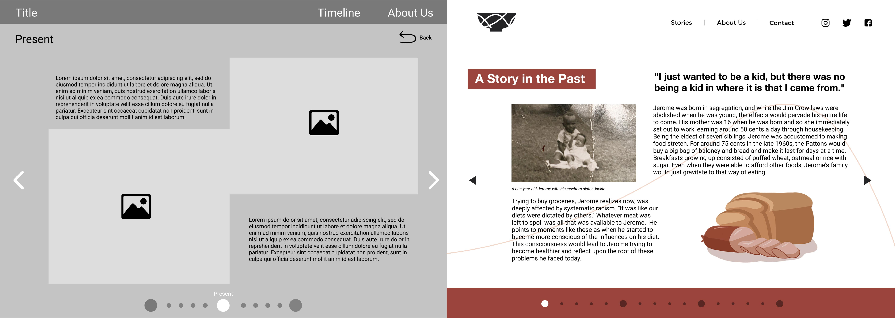

A website that highlights individual stories of the people in the black community around the US. Using their perspective on black food culture as the guide into aspects of their life.
Visual Design UI Design Prototyping
Karen Lee Amanda Ding Alvina Cheng Kent Chin Jasmine Troung
Roger Li Henry Kong Rui Wang Jessica Huang Clarence Li
School Project
Sep 2020 - Nov 2020
With the civil unrest in the US during summer 2020 over the police brutality that killed George Floyd, black people are tired of being treated less than all the other races that live in the same country. With many BLM resources suggesting a way we can start change is by educating ourselves about their history and culture. Our cross-cultural design class took the term as an opportunity to do this by creating a digital product that would help showcase black food culture history in America. Over the course of the term, we collaborated remotely in a group of 11 due to the pandemic to define a problem, research, interviewed a small group of black Americans, and designed a prototype form the ground up.
Starting off the project we had to define our own problem that would relate back to black food culture history in America. To do this we began with researching and interviewing black Americans to discover pain points. Mainly from the multiple black Americans we interviewed, it was clear that society associated individuals of the same culture will think the same way and are the same people which would lead to stereotypes. We came up with this statement to guide us through the rest of our project:
As a group we did most tasks together in the beginning with our bi-weekly meetings before splitting off into smaller sections once we got to the closer stages of completion. I helped interview our black American partners for this project in the early stages so we could see a clearer picture to our problem and involve them in the beginning of the design process.
During our meetings we would initially discuss where we should put our content and eventually, we ended up with a website idea. As we discussed in our meetings, I helped visualize the layouts of our ideas with roughs so we can pick one direction and run with it.
I mocked up potential style guides our website will implement and shared with the group after we finalized the wireframes. I came up with a couple of styles that included the colour palettes, fonts, moods, and shapes. As a group we decided to go with the modern route and story arc line work in the background as our theme. The change that was needed though was warmer tones in the colour palette. This was to give the feeling of a story time by the fireplace.
After going with the theme of the story arc lines, we decided on a name for our website, Through the Lens of Food, and I was tasked with making the logo. I started off with rough pencil sketches to get some ideas and input. Eventually I landed on a bowl with story arc lines intersecting. The bowl represented the food aspect while the intersecting story arcs represented the overlap of individuals with similar culture practices, yet each person has a unique path in life.
I helped with applying our style guide while building our hi fidelity mock-up on Figma. I picked what colours sections would be, the style of buttons, and sizes of elements that will be featured. I made sure contrast is apparent so people visiting the site know which elements are buttons and that sections are clearly defined.
A website that holds a collection of stories from individual black Americans that talks about their past, present, and future through their experience with black food culture told through a variety digital mediums. Their past talks about how each individual grew up and the foods that were around them. With the present they convey stories of changing eating habits and specific dishes they still enjoy from their food culture. The future represents their hope for future generations and their food culture.
We decided to focus our efforts on a website only as the accessibility to all ages is greater. We want older individuals to be able to access this resource as well and understand that they may lack a smartphone. A website also future proofs the content as long as the internet stands and do not have to worry about which social media platform is most popular at the moment.
This resource we created is not only for outsiders of the culture but other black Americans to get some perspective of the unique upbringing and lives of fellow black Americans. Not only is this project we built showcasing what we learned about black American culture as a team that we share with others. It shows that someone is out there that cares about these individuals, who they are, and what their story is about.
This project was a great learning experience not only in terms of designing but about black culture in America too. Overall, our partners in this project were grateful that we went with a storytelling path that help shine light on normal individuals and give a digital outlet for their voices to be heard. I personally learned a lot about collaboration with a big team, visualizing ideas, and culture.
With a vague prompt given by our partners in this project, it was really up to us as the problem solvers to understand and define their problem better than them to come up with a good solution. This could only happen by having multiple interview sessions with prepared questions to ask that will help give the puzzle pieces that we have to put together as a team to come up with a statement.
Having meetings with the whole team was a challenge when there was no structure. Since I was one of the members with a more dominant voice, I realized I could step up and facilitate our discussions and bring up the voices of teammates that were overshadowed. Showing through my actions, the others who were also dominant started to practice what I was doing too, and we took turns leading discussions.
Even though we associate ourselves with a certain culture or religion, those traits associated with them are not who we are but only a part of us. We are not the same person as our parents, siblings, friends even with the similarities. How we experience, play, think in life is 1 of 1 and specific to us as individuals.